TortoiseGit
TortoiseGit é uma aplicação cliente para repositórios git, esta aplicação à semelhança do TortoiseHg e TortoiseSVN integra com o Windows Explorer facilitando e automatizando assim o processo de commit, pull, push, etc.
Instalar e configuração do TortoiseGit
1º Fazer download da aplicação cliente em ... 2º Configurar o TortoiseGit.Tal como já foi feito anteriormente, é necessário configurar o Tortoise de maneira a que este saiba qual o utilizador global e seu respectivo email. Esta informação serve para preencher o campos de Author quando é realizado um commit.
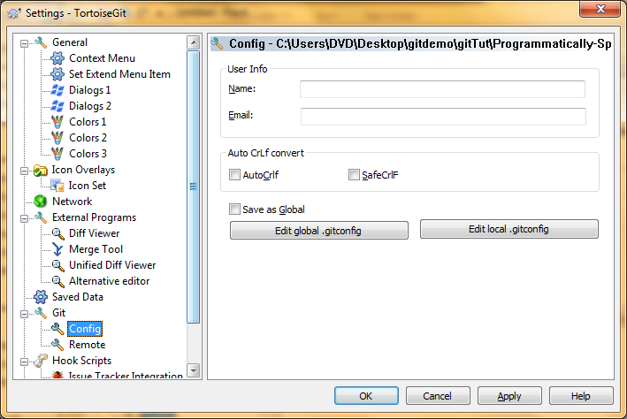Para aceder a este menu, basta em qualquer directoria, pressionar o botão direito, TortoiseGit -> Settings.
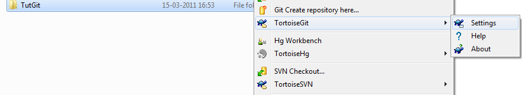Utilizado o TortoiseGit
Todos os comandos anteriormente explicados sobre o Git estão disponiveis nesta aplicação.
git init e git clone
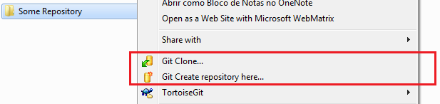Selecionando uma pasta, que ainda não seja um repositório git, é possivel criar um novo repositório ou fazer clone de um já existente.
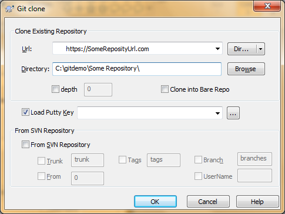Ao fazer clone de um repositório todos os dados de "ligação" ao repositório remoto deste ficam automaticamente preservados não sendo necessário qualquer configuração sobre o repositório remoto. Se o repositório foi criado manualmente, no primeiro push irá ser necessário configurar o ponto remoto.
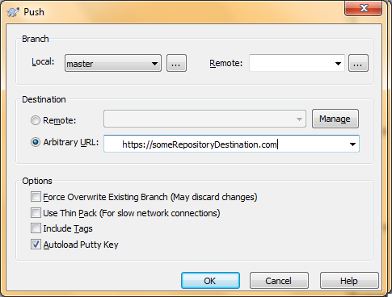git commit
Á semelhança dos outros Tortoises a operação commit detecta automaticamente as alterações na working-copy.
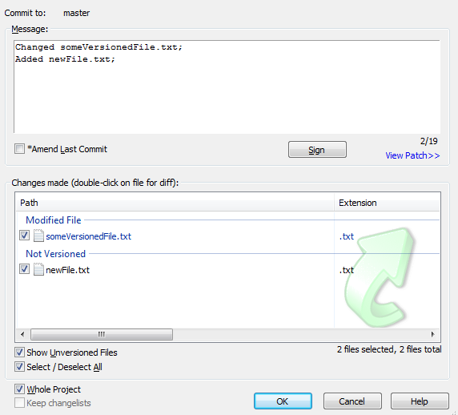Nota: Relembra-se que a operações de commit não sincroniza os dados com o servidor remoto.
git push e git pull
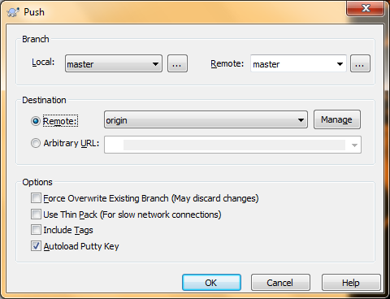 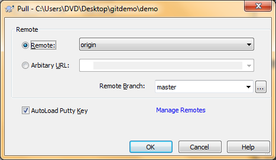Em ambos os comandos irá ser necessário introduzir uma password, esta é a mesma que a usada na conta do GitHub.
Conflictos
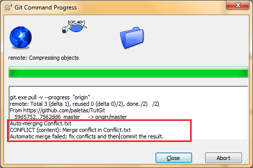Na figura anterior é apresentado o resultado de um Pull ao servidor. Como está evidenciado existiu um erro ao fazer merge entre o repositório e a working-copy. Estes erros são muito comuns quando várias pessoas num projecto estão a editar os mesmos ficheiros e os submetem para o repositório remoto. E tal como nos outros Tortoises, é possível resolvê-los facilmente.
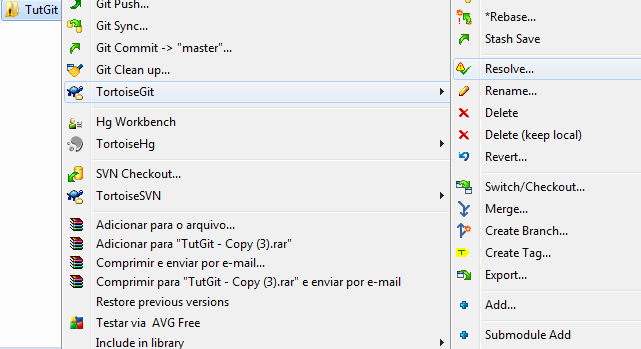 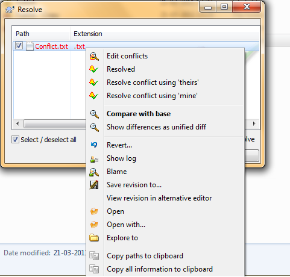